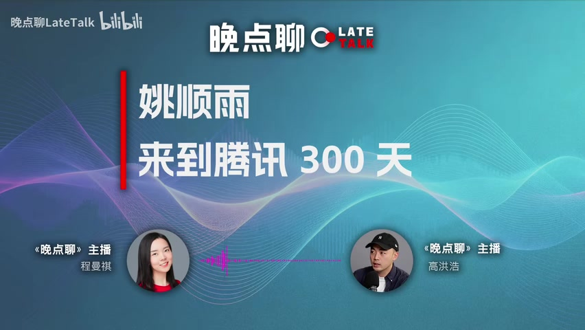

CHAPTER 01 从 HY3 切入：为什么重看混元

00:00:06曼祺 · 主持人姚顺雨在腾讯里最大的支持者是谁？
00:00:08高洪浩 · 嘉宾Martin，也就是刘炽平。
00:00:09高洪浩 · 嘉宾对。
00:00:10曼祺 · 主持人Martin可以帮他搞定什么？然后你感受到大家对姚顺雨的评价是怎样的？
00:00:18高洪浩 · 嘉宾我觉得总体评价是他不是那种非常技术导向的人，他非常重视组织。他经常在内部说，做大模型这个事情，组织是非常关键的，很多问题其实都是组织的问题。
00:00:35曼祺 · 主持人整体来说，腾讯对混元HY3这个结果满意吗？
00:00:38高洪浩 · 嘉宾态度上，更多是看心理预期。HY3是一个小模型，它能解决的问题是有限的；但核心目标是让整个组织磨合好，让团队士气重振。
00:00:50曼祺 · 主持人你觉得混元这边和微信的WeLM团队，长期来看会是什么走向？
00:00:56高洪浩 · 嘉宾大概率是长期并存的。
00:00:58曼祺 · 主持人为什么不用一套底层模型？比如在一套底层模型上做面向微信的优化，微信团队主要负责优化部分。
00:01:07高洪浩 · 嘉宾我知道Martin（刘炽平）跟张小龙也聊过这个事。张小龙的态度大概是：他不觉得混元是第三方，但他对微信本身的用户隐私和数据极度在意，所以还是更倾向于自己做一个模型，以便更可控。
00:01:29曼祺 · 主持人我觉得在HY3那个阶段，其实腾讯可以只做一套——从技术或资源使用效率的角度来看。
00:01:35高洪浩 · 嘉宾但我理解这就是腾讯的选择。
00:01:38曼祺 · 主持人欢迎收听《晚点聊》，我是曼祺。今天这期节目比较特别，是我和晚点的同事高洪浩一起聊他最近刚报道的主题：姚顺雨加入腾讯之后，腾讯大模型的变化。
00:01:57曼祺 · 主持人这篇文章已在7月13日发布于《晚点》公众号，标题是《当一个年轻人空降改造腾讯混元的300天》。洪浩之前在《晚点聊》也录过数期节目，是我们报道互联网领域的主力作者，尤其长期跟踪腾讯和字节。洪浩，你可以和听众打个招呼。
00:02:17高洪浩 · 嘉宾Hello，hello。
00:02:18曼祺 · 主持人大家好，那我们直接开始吧。我先问几个自己比较好奇的问题：在写作过程中，我们通常会积累大量素材，但最终未必都呈现在正文中。具体到这篇报道，关于姚顺雨来了之后腾讯AI的变化，有没有哪些内容是文章里没呈现或没展开的？
00:02:38曼祺 · 主持人但你觉得还挺有意思的事儿。
00:02:39高洪浩 · 嘉宾你觉得可以分享一下吗？我觉得还是有的，而且挺多的。比如说大家现在看到这篇文章，它更多呈现的是这个团队、这个组织偏积极和正向的一面。但在一个组织里面，肯定会有各种各样的声音存在——不管是老员工相对而言比较负面的情绪，还是从外部加入腾讯的人所表现出的一些不适应状态，其实这些都有。
00:03:07高洪浩 · 嘉宾甚至包括我们也知道，腾讯内部还有另一个团队，就是微信团队，也在做大模型。那混元团队和微信团队之间，无论是所谓的竞争，还是交流，相关的内容其实都没有特别展开。
00:03:28曼祺 · 主持人对，不一样的声音，或者说偏不适应的声音，放得没有那么多。是因为你判断整个变化是向好的吗？
00:03:34高洪浩 · 嘉宾如果从最主流的声音、最明确的氛围来讲，大家的状态确实跟我去年开始那一年跟大家聊的时候完全不同了。
00:03:47曼祺 · 主持人所以整个士气肯定是明显提升了。
00:03:49高洪浩 · 嘉宾这个是非常明显的提升。它相当于从一个最低谷慢慢上升，但你说上升的程度有多少——它不是一个大跨步的跃进，但确实处于一个持续上升的状态中。
00:04:00曼祺 · 主持人然后你说到微信的大模型团队和混元之间的关系，我觉得这篇文章没有展开，一个是因为这篇的主题还是混元。我觉得之后两者会形成什么样的竞争或合作关系，本身就是一个很好的观察视角，也是下一个会影响腾讯AI发展走向的主要议题。
00:04:18高洪浩 · 嘉宾从内部角度看，其实是有一定错位的。比如混元是想去‘摸高’，去逼近所谓智能的极限；但微信的核心，是要把能力部署在一个承载14亿用户的产品里。那它的资源——我相信，哪怕现在全球最卡最多的硅谷公司，能不能让一个能力真正覆盖14亿人？它的显卡储备、算力储备，是否足够支撑这种规模的落地？
00:04:49高洪浩 · 嘉宾我觉得这是微信非常大的一个考验。所以两个团队的定位，其实是有一点不太一样的。但你在一家大公司里，公司的资源是有限的，给你多一点，给对方就会少一点。这种资源上的平衡，确实也客观存在。
00:05:04曼祺 · 主持人然后还有一个我比较好奇的，也是跟这篇文章发布后相关的一些变化：你发这篇文章的时候，K3还没有发布。对，K3是上周五，7月17号发布的，表现很亮眼，反馈也比较好。我也跟一些业内人士交流过，比如他们怎么看现在的K3，以及接下来可以预见的——国内模型的竞争其实还挺激烈的，大家水平都很高。
00:05:28高洪浩 · 嘉宾我其实在K3发布之后也跟一些人聊了一下。K3发布之前，我们也会聊到当时行业的整体情况，或者其他模型的进展。我觉得声音也比较不一样：有一派觉得混元的节奏是比较稳健的。我在文章里也写了，可能有一部分声音认为，大模型领域一直是‘各领风骚几个月’，甚至后来者居上的情况可能会更加明显。
00:06:00高洪浩 · 嘉宾比如说我后面做的模型，可以用上更先进的架构，可以蒸馏更先进的模型，我的数据也会变得更好。大家会有这样的观点——但我不是在说混元哈。
00:06:13曼祺 · 主持人我是说，我刚想问：混元要蒸馏吗？哦。
00:06:16高洪浩 · 嘉宾没什么，我的意思是说，大家会有这样的观点，或者有人认为这是一个趋势，就是后来者居上。但同时，也有很多人觉得，现在其实已经没什么人在做这么小的模型了，大部分都在往更大尺寸走，对吧？像有传闻说，有人在训练实体级的模型——所有人都在追求极致。那做这种小模型的意义是什么？
00:06:42高洪浩 · 嘉宾其实我觉得两种声音都存在。
00:06:44曼祺 · 主持人所以就是有一部分人还是觉得会员目前的节奏是OK的，有一部分人比较焦急。
00:06:49高洪浩 · 嘉宾呃。
00:06:49曼祺 · 主持人对我觉得是这样子的，那会员三是个多模态的模型。
00:06:51高洪浩 · 嘉宾接近300B。
00:06:54曼祺 · 主持人290多，OK，也是个E级的模型。是是是，确实比较小。这比较像现在很多公司发模型时会发几个版本——有最大的版本，也有比较小尺寸的，它这个比较接近大家发布的小尺寸版本。
00:07:06高洪浩 · 嘉宾我理解一个考虑，很有可能是我作为一个新人刚到这个公司里面来，然后需要在一定的周期内有所交付。我不可能说我来了一年了，然后什么都没有。我觉得这是一个考虑，就是我必须要交付一些东西出来，让老板看到我的结果。另外，我的整个团队基本上都是新组建的。
00:07:36高洪浩 · 嘉宾我需要在这种真实的实践中去磨合每一个环节、每一个人，包括大家的工作方式、整个流程等。
00:07:46曼祺 · 主持人OK，那我们接下来正式聊聊姚顺雨来了之后的变化。可以先从他是怎么加入腾讯开始的。其实你文章里大概写了一下这个过程，你也可以和我们的听友简单说一下。
00:07:55高洪浩 · 嘉宾其实就是在2024年的时候，因为大公司的高招团队每年都会去各种各样的顶会，那时他们会与非常多的研究员、科学家建立联系。当时他们认识到了姚顺雨，然后把他介绍给了腾讯的高层。但介绍完了以后，其实很长一段时间并没有太多联系。
00:08:24高洪浩 · 嘉宾一直到可能2025年的时候，姚顺雨因为各种各样的原因希望回国，这时就跟国内的一些大厂有了联系。那个时候，腾讯可能就有了更明确的意向，说‘那你是不是可以来我这儿，承担起混元负责人的位置’。
00:08:46曼祺 · 主持人据你所知，姚顺雨回国有没有考虑过创业？
00:08:49高洪浩 · 嘉宾说实话我不确定他有没有考虑过创业，但他肯定跟几家大厂都做过联系和沟通。
00:08:56曼祺 · 主持人大公司他都聊过。是的，另一方面，腾讯除了姚顺雨之外，也在找一个新的负责人。
00:09:02高洪浩 · 嘉宾这个背景是什么？其实最开始是在2025年，DeepSeek出来以后，腾讯的高管发现，原来一个经验可能并不那么丰富、全是年轻人的组织，居然能做出这么厉害的模型。那时候他们意识到自己的团队已经不再年轻——都是一些偏资深的成员，背景更多是从传统的搜索、广告、推荐出来的。其实所有大公司都这样。
00:09:34曼祺 · 主持人你比如说字节，对吧？字节最开始……
00:09:36高洪浩 · 嘉宾朱文佳也是搜索、广告、推荐背景出来的。
00:09:38曼祺 · 主持人包括最开始朱文佳下面是由乔木负责大学模型，他之前也是搜广推出身，带的很多人也来自搜广推。
00:09:45高洪浩 · 嘉宾所以那个时候他们就意识到，年轻人、甚至没有那么资深经历的人，也能做出好的东西。当时定下的策略就是重点找年轻人。我听到一种说法，其实当时有两个选择：一个是把现有团队慢慢换血；
00:10:07高洪浩 · 嘉宾另一个想法是再组建一支年轻团队，单独跟混元做赛马。但我们今天看到的结果，还是沿用了混元这套技术框架，只是逐步替换了其中的人员。所以那时年轻人已经成为腾讯明确瞄准的目标，高管层也有了反思和动作。比如Martin会亲自去硅谷，跟当地前沿的科学家——包括Meta、Google的研究员交流，希望他们加入腾讯。以前研究员或模型方向人才的面试，可能最多只到VP层级，也就是Martin的简一甚至简二这个级别；
00:11:02高洪浩 · 嘉宾现在Martin也会直接参与他们的面试。
00:11:06曼祺 · 主持人这个变化是从2025年初开始的。对，这个动作确实比字节要晚一点。
00:11:11高洪浩 · 嘉宾晚很多，因为字节更早。
00:11:13曼祺 · 主持人高层对高层的一号，我可以说一下——就是张一敏，对吧？我说一下，我们文章里常写的‘自己高层’，还真能说吗？反正指的就是张一敏。我觉得文章不写他，我能理解的一个原因是，他的实际职位并不是……
00:11:30高洪浩 · 嘉宾也不是董事长。对。
00:11:31曼祺 · 主持人好，说回来——张一敏当时见了很多人，更早的时候，可能早一年多就开始接触大量研究员。
00:11:37高洪浩 · 嘉宾对，其实就是DeepSeek出来以后，他们观察到的这个变化。我觉得整个行业对年轻人的重视风潮，应该也是从那时候开始的。
00:11:48曼祺 · 主持人我觉得是个逐渐的过程。嗯，其实在2023年大模型刚火起来的时候，我印象很深。当时我们也写了一篇文章，是方六写的，标题叫《大模型创业潮狂飙180天》。里面提到一件事：我们那时去跟一位投资人聊，
00:12:04曼祺 · 主持人那位投资人讲到一位创始人，大概35岁左右，他说‘太老了’，35岁以上的创始人他基本不见。这种观念是慢慢扩散的，我觉得更多人形成共识，可能是在DeepSeek之后。除了姚顺雨之外，你知道腾讯还接触过其他什么候选人吗？
00:12:22高洪浩 · 嘉宾他其实接触过挺多人的，就是那个时候。
00:12:26曼祺 · 主持人我是说他这个职位的。
00:12:28高洪浩 · 嘉宾他这个职位，我不知道。
00:12:29曼祺 · 主持人觉得其他很多人，不一定都是负责整个团队的。
00:12:32高洪浩 · 嘉宾对对对对对对对。
00:12:34曼祺 · 主持人那你可以继续说，你说他接触很多年轻人。
00:12:36高洪浩 · 嘉宾腾讯更早的时候就已经开始引入外部人才。他刚开始做混元的时候，大部分成员是老一代人，也就是做搜索、广告、推荐的那一批技术专家，所谓的老腾讯技术骨干。当时因为2021年、2022年整个腾讯都在推进降本增效。
00:12:59曼祺 · 主持人哦，那说到这儿有个背景：他们2016年那会儿就做了搜索推荐相关的事，对吧？那些人后来是都离开了，还是有些人也进入了混元团队？
00:13:09高洪浩 · 嘉宾对，如果要这样讲的话，其实混元最开始是有AILab参与的。一开始，AILab所在的组织叫技术与工程事业群，这是腾讯负责整个公司底层技术的事业群。
00:13:27曼祺 · 主持人这个是TEG。
00:13:29高洪浩 · 嘉宾对。然后AILab其实就在这个事业群里面。大模型出来以后，整个腾讯的大模型团队就是诞生在这个事业群里面的。但当时里面其实有多个团队都在各自做自己的大模型——AILab做了其中一个，像他们的数据平台部也在做一个，基本上每个团队都在独立推进，有点类似赛马机制。
00:13:53高洪浩 · 嘉宾那时候AILab其实最懂大模型，因为他们内部有一支小团队常年研究ALP方向。但最后他们做出来的效果并不够好；反而是数据平台部那边做出来的模型，在内部跑起来时效果最好——也就是今天所谓混元一、混元二底座背后的那个团队。相当于几个团队赛马，最终跑出了现在的混元，之后大家合并，把所有资源都集中到混元团队，每个部门负责一些模块，形成一种联合战队的组织形态，做出了最初代的混元。
00:14:37高洪浩 · 嘉宾所以最开始我们能看到混元团队里大部分人，绝大多数都是老一代做搜索、广告、推荐的技术人员。再加上2021年、2022年腾讯进行了非常大的一轮降本增效，人手远远不够，不光是人不够，GPU卡也很紧缺。所以这是一个有点残缺的组织。
00:15:00曼祺 · 主持人我们比较早的时候有个报道，2023年初还提到过，腾讯在2022年其实砍掉了一部分GPU订单。
00:15:08高洪浩 · 嘉宾对，是的。所以整个混元最开始只有2000张GPU卡，而且这2000张卡甚至不是混元自己的，是从广告部门调过来的。广告部门为什么会有卡？因为他们那时也在做大模型，但做的是广告大模型——不是Transformer架构，而是以前BERT那一套，用于广告推荐和广告搜索。广告是盈利部门、是赚钱的，所以他们有钱买卡，但也只有2000张，就挪过来给混元用了。
00:15:37曼祺 · 主持人所以从2024年底开始，才陆续补充一些新人，不再是以前的老腾讯人。
00:15:41高洪浩 · 嘉宾是的。第一个引进的应该是多模态方向的谭旭。他也是从微软过去的；后面慢慢有了从字节跳动过去的冯佳石，还有陆续从其他机构引进的一些科学家或研究员。
00:15:56曼祺 · 主持人谭旭是什么时候加入腾讯的？2024年底吧？那之前谭旭加入Kimi的独家报道，还是曼祺写的。
00:16:03高洪浩 · 嘉宾也是曼祺写的，也是曼祺写的。他在Kimi也没待特别久。
00:16:08曼祺 · 主持人谭旭其实不是做大语言模型的，他以前在微软原本就是做语音的。
00:16:12高洪浩 · 嘉宾是的，多模态那边。冯佳石也是做多模态的。
00:16:17曼祺 · 主持人彭厚文也是那会儿加入。
00:16:18高洪浩 · 嘉宾彭厚文是2024年底加入的。
00:16:20曼祺 · 主持人他以前也在威尔亚语亚员，也是多模态方向。最近小红书上传出消息说他离开了，所以那会儿就补充了一些人。
00:16:29高洪浩 · 嘉宾2024年底开始补充。
00:16:32曼祺 · 主持人当时的思路还是找偏研究背景的人，对，不亚演远也是偏研究背景的。
00:16:36高洪浩 · 嘉宾为什么呢？因为那时他们意识到一个组织上的问题：混元团队里缺少做前沿研究、能压方向的科学家。腾讯最开始的AI团队是做AI的人先进去，然后是做工程的人，但没有原生的AI研究团队。
00:17:00高洪浩 · 嘉宾这就像做一个产品却没有产品经理——产品经理的作用是把控方向，知道哪些方向重要、哪些技术路线正确。但我们没有这样的人，就不清楚下一步该怎么走，很多事好像在白做工，也不太清楚整个行业当前最关心什么。
00:17:21曼祺 · 主持人我的意思是，他们那会儿好像没有直接去找吴永辉。吴永辉在谷歌待了很多年，有很强的研究背景；包括姚顺雨，他在OpenAI虽然待的时间不长，但之前已有业界有影响力的成果，而OpenAI又是这个领域最好的公司之一，成长速度应该也更快。所以他们是后来才转变思路，要找这种既懂业界又懂研究的人。
00:17:47高洪浩 · 嘉宾更直接地说，其实是在那个时间点才真正意识到自己落后了，以及必须把大模型真正重视起来。之前大家都知道大模型是个重要方向，但从认知到行动，这段转化的速度是慢的，反应偏慢。字节其实也稍微慢了一点，是2023年才真正意识到这个东西‘work’——我之前跟一些朋友聊过，某位高管真正觉得这是个大机会，也是GPT-4出来以后，也就是2023年4月左右。
00:18:23曼祺 · 主持人没事，你说吧。
00:18:25高洪浩 · 嘉宾真正意义上觉得这是一个大机会、这个东西已经‘worked’，也是到GPT-4出来以后，那会儿已经是2023年4月了。
CHAPTER 02 团队、人才与训练基础设施
00:18:34高洪浩 · 嘉宾其实已经算晚了，在AI变化这么快的时代，腾讯比他们还要更晚一些。
00:18:40曼祺 · 主持人那回到姚顺雨加入腾讯这件事，双方正式敲定他加入腾讯大概是什么时间？包括他后来为什么没有选择字节或阿里这类公司。
00:18:51高洪浩 · 嘉宾其实就是在2025年秋天确定要加入腾讯的。他为什么加入腾讯，我在文章里也写了：他之前写过一篇非常有名的博客，叫《The Second Half》。里面的核心判断是——下半场的比拼不再是训练技巧，而是定义真正值得解决的问题。而要找到这类问题，很依赖大公司是否沉淀了足够数量的context。在他看来，腾讯和Meta是关键的、拥有最多context的两家公司。
00:19:28高洪浩 · 嘉宾比如腾讯，先不说能不能用，但它确实有大量社交数据，也有办公场景的数据，像企业微信、文档、腾讯会议；还有搜索相关的，比如QQ浏览器、微信搜索。
00:19:53高洪浩 · 嘉宾还有很多内容数据，比如腾讯视频、QQ音乐等，还有游戏。它在每一个垂直领域都有做到头部的应用，所以它的上下文场景或类别非常丰富。
00:20:09高洪浩 · 嘉宾Meta其实跟腾讯有一点类似。之所以不选字节，是因为字节的用户体量虽然大——比如抖音有8亿DAU，头条约1亿DAU，番茄小说和红果小说也各有约1亿DAU——但这些产品的用户画像其实高度同质化。同时，字节所有产品的生态都围绕推荐和分发构建，这种机制沉淀下来的数据质量、表现出来的多样性，也就是他们常说的diversity，远不如腾讯和Meta所积累的数据有效。
00:20:48曼祺 · 主持人那从这个角度来说，飞书对字节倒是个很特别的数据沉淀。
00:20:53高洪浩 · 嘉宾我觉得是这样：飞书的数据量其实并不大，远远不如钉钉和企业微信的量级；而且关键还在于怎么用这些数据。
00:21:02曼祺 · 主持人对，你提到他25年4月发的那篇博客，就是那篇文章的后半部分。我觉得他当时可能就在考虑新的工作方向。这篇文章挺有意思的，我们会把链接贴在本期节目介绍里。他当时的核心判断是：AI已经到了一个下半场的临界点。
00:21:22曼祺 · 主持人上半场大家做的事，是用各种算法和模型去攻克那些评估标准非常明确的任务——比如对错清晰、人可以不参与评估、结果客观性强的题目。很多属于智力游戏，像下围棋、奥赛金牌这类，不是真实的生产任务。而他认为接下来更重要的，是给AI找到合适的任务，也就是到底该用AI做什么，以及去攻克那些按以往评测体系很难评估的任务。从文章透露出的想法看，腾讯确实挺合适。他还提出了一个技术判断：之所以到了上下半场的分界点，是因为强化学习已经表现出一定的泛化能力。
00:22:08曼祺 · 主持人你通过强化学习训练之后，可以去解决一些不同的任务。那回到腾讯的实际状况，这个设想听起来挺好，对吧？但问题是：腾讯真能用起来吗？真能把这么多应用串联起来吗？
00:22:21曼祺 · 主持人其实你文章里也提到了，以往腾讯的一个问题就是部门墙比较严重。
00:22:24高洪浩 · 嘉宾我觉得所谓的信任，其实是相辅相成的。以前每个业务都处于自己高速发展的阶段，都有增长，所以可能不太需要依赖外部的帮助。但今天我们可以看到，每一家公司、每一个业务，都强烈感受到AI带来的焦虑——大家都想知道自己该怎么迎接AI，又害怕被AI颠覆。因此，他们对拥抱AI这件事的态度，比过去开放很多。
00:22:53高洪浩 · 嘉宾大家都想要说我怎么去迎接这个所谓的AI，或者害怕被颠覆，所以他们对于拥抱AI这件事情的态度是比过去要开放很多的。
00:23:05曼祺 · 主持人也就是说，在这种氛围下，别的部门本来就比较愿意和大模型团队合作。
00:23:11高洪浩 · 嘉宾是的，但同时你也得证明自己真能带来帮助。比如以前的混元，就算我给了你数据又怎么样？如果你效果拉垮，那就等于浪费了我的数据，彼此的信任就建立不起来。以前微信肯定不会给会员数据，现在当然也不会。
00:23:36高洪浩 · 嘉宾现在也不……不对，不对。
00:23:38曼祺 · 主持人这么说的话，应该是现在还没有，对吧？
00:23:41高洪浩 · 嘉宾对，以前大部分部门根本不会把数据给大模型团队。比如腾讯视频的版权是要花钱买的，很多版权还在阅文那边，又涉及各种结算问题。再比如腾讯新闻，大家会提供一部分数据给混元团队，但合作模式仍是独立项目制。
00:24:05高洪浩 · 嘉宾比如我要单独为腾讯新闻做一个什么功能，这批数据就只能用于这个项目，不可能拿去训练大模型，也不能用于其他用途。
00:24:16曼祺 · 主持人应该也有些合规的问题。
00:24:18高洪浩 · 嘉宾是的，对的。微信就更不用说了，这些数据更加敏感，保护得也更好。所以所有数据其实是每个业务部门自己最宝贵的资产。今天混元如果想跟他们建立更紧密的合作，肯定要先证明自己是专业的，真的能帮到他们——只有这样，各业务的新房才可能一点点打开，逐步建立起合作。
00:24:45高洪浩 · 嘉宾比如说现在已有一些迹象：我听说腾讯新闻通过元宝入口接入到了站内App里，结果用户活跃度很快实现了明显提升，大家发现用户很喜欢在新闻里向元宝提问。
00:25:02高洪浩 · 嘉宾无论是帮用户理解这篇新闻、总结这篇新闻，还是在评论区跟元宝互动，效果都很直观。他们看到这确实能给自己产品带来真实提升，才会非常乐意说：‘哦，你有什么需要帮助的？我可以分享一些我的数据，咱们一起做合作。’比如和平精英——就是吃鸡那款游戏——我就跟混元三有非常切实的合作。它帮我做的AC在游戏里确实有非常明确的效果，我才愿意更多地把我的场景开放给你。
00:25:37曼祺 · 主持人像这些合作，现在是由会员团队里的什么部分的人在负责呀？
00:25:41高洪浩 · 嘉宾他们其实是给每一个业务、或者说大多数业务，都派出了两到三人的后训练团队，专门对接。
00:25:51曼祺 · 主持人所以后续是后训练的人在负责。
00:25:53高洪浩 · 嘉宾是的，专门跟这些业务沟通交流，帮你优化业务，业务也会提供自己的数据。
00:26:01曼祺 · 主持人所以你其实看到，在现在这个氛围下，这一次模型层和应用层的合作确实发生了一些变化——在腾讯内部，大家的交流和协作是在变多的。那后面我们来展开聊聊，他正式加入之后做了些什么？我觉得可以分几个议题来聊，正好也能把大致的时间线串起来：一个是人和组织怎么变。
00:26:21曼祺 · 主持人因为一般来说，一个新的负责人来了之后，肯定要从调整组织开始着手。你可以讲讲你大概了解的这个过程是什么。
00:26:30高洪浩 · 嘉宾最近的一个变化，是他把多模态理解这块业务也挪到了大模型部。
00:26:39曼祺 · 主持人这个是你报道里没写的，是刚发生吗？
00:26:43高洪浩 · 嘉宾4、5月份的时候。
00:26:45曼祺 · 主持人那你为什么没写？所以他的职责范围是在扩大了。
00:26:48高洪浩 · 嘉宾对，其实在不断扩大。
00:26:50曼祺 · 主持人他们最终的计划，是说整个大模型相关工作，类似于吴永辉在PC那边的模式。
00:26:54高洪浩 · 嘉宾他都要来负责。而 FRE 的话，我自己觉得可能不一定是最终的计划。老板有没有这样想法，我不知道。
00:27:01曼祺 · 主持人就这是一个自然可能会发生的过程。
00:27:03高洪浩 · 嘉宾对，就是你在老板非常信任你的这个阶段，你是可以做非常多的事情的。
00:27:09曼祺 · 主持人一般腾讯的老板会信任一个人多久？那种你没有拿出绝对毫无质疑的成绩的情况下，他的耐心大概会有多久？
00:27:18高洪浩 · 嘉宾我觉得可能两三年吧，那还挺久的。陈诚业老板特别容易信任你。
00:27:22曼祺 · 主持人这是因为以前有些什么例子让你觉得他是这样的吗？
00:27:26高洪浩 · 嘉宾就是我觉得他整体的耐心还算是比较久的。
00:27:29曼祺 · 主持人他的思路在慢慢扩大，这是组织上的一个宏观脉络。具体到人员变化上是怎么变的？前面也提到，可能是一个新老逐步更替的状态。
00:27:40高洪浩 · 嘉宾对，其实我觉得姚顺雨整体还是一个挺聪明的人。他知道在老板最信任他的这个阶段，迅速把所有重要岗位上的人换掉了——预训练的人、后训练的人、评测的人、英法方向的人，基本都换了一遍，全是他自己招来的。
00:28:05高洪浩 · 嘉宾比如从 INF 来的肖雪风、张弛、黄启，这些其实都是 C 的 INF 团队成员。因为 C 的 INF 团队被普遍认为是整个行业里最强的自有 INF 团队；还包括预训练方向的刘辉丹。
00:28:24曼祺 · 主持人所以实际上确实正在发生一个新老交替的问题：哪些老人走了？
00:28:27高洪浩 · 嘉宾老人其实都没有真正离开，只是回到了腾讯内部其他岗位。
00:28:33曼祺 · 主持人就离开了混元，不一定离开了腾讯。
00:28:36高洪浩 · 嘉宾对，离开了混元。有一个混元的朋友跟我说，杨叔有个想法挺有意思：你可以继续在这儿呆着，只要不碰基模，你爱干嘛干嘛。其实混元没有做过大规模的优化裁员，组织调整是有不少，但这些人大多数还留在腾讯。
00:28:59曼祺 · 主持人那是他们自己……
00:29:01高洪浩 · 嘉宾就被边缘化了。
00:29:02曼祺 · 主持人然后自己就转岗。
00:29:03高洪浩 · 嘉宾这别的你可以待在这儿，但只要不碰基础模型，你想干什么就干点什么。
00:29:10曼祺 · 主持人所以它是个相对比较温和的手段。
00:29:13高洪浩 · 嘉宾你觉得呢？我觉得也不温和啊，因为一上来大概两三个月人马上换一波，这个速度和执行力还是非常高的。
00:29:24曼祺 · 主持人姚顺雨目前正式的汇报关系是怎样的？
00:29:27高洪浩 · 嘉宾他是直接向刘炽平汇报，同时也向首席技术官卢山汇报。
00:29:35曼祺 · 主持人卢山实际上管他们吗？
00:29:37高洪浩 · 嘉宾管啊，卢山现在核心是管多模态那部分。
00:29:42曼祺 · 主持人所以基础模型这块卢山管得并不多，大模型这块可能并不多。
00:29:46高洪浩 · 嘉宾他实际上是姚顺雨的直线汇报对象。
00:29:49曼祺 · 主持人另一方面，姚顺雨能招到这些人是因为什么？这些人为什么愿意加入？
00:29:55高洪浩 · 嘉宾很多种原因。一个是姚顺雨本身名声在外，他从OpenAI出来，在圈内其实有一定号召力，是有吸引力的，特别是对一些年轻的研究员，愿意来混元——姚顺雨在里面起到了非常重要的作用。另外一个是腾讯也开始大方起来了，愿意给更高的薪酬。
00:30:20曼祺 · 主持人所以之前员工的待遇是低于市场水平吗？
00:30:22高洪浩 · 嘉宾肯定是低于的。也是从2025年开始，腾讯决定要在市场上抢人，愿意出非常高的价格把人挖过来。
00:30:32曼祺 · 主持人那他现在对比自己和阿里，给到的签约奖金等待遇怎么样？
00:30:35高洪浩 · 嘉宾肯定不低，相当程度上还是比他们高。
00:30:39曼祺 · 主持人是要比他们要高的，因为他相对劣势一点。
00:30:42高洪浩 · 嘉宾对，以及自己和阿里组织已经建制相对完善了，没有太多坑了。简单来说，但混元要重建的话，它有大量的坑——每一个位置上，都可能让一个原来在字节、在阿里没办法独立带队的团队成员出来，在混元实现自己带队，或者做自己想做的事情。这个是相比于C端业务、相比于天文（注：应为‘天问’或音误，按稳妥原则不猜测具体名称）的一个优势：我这里还有坑，你来就能当Leader，或者做更多自己想做的事，不用再在SE里当一颗螺丝钉。
00:31:21曼祺 · 主持人据你所知，现在混元团队对人才的吸引力如何？
00:31:24高洪浩 · 嘉宾总体来说，对于校招生和年轻研究员，吸引力是非常大的，甚至很多人联系都抢不过来。我觉得姚顺雨在这个过程中作用非常大——先不管他具体做出了什么成果，但他的名字本身，对这些年轻人就是一种吸引力。
00:31:47曼祺 · 主持人对校招生是这样，那对职位更高的人呢？因为现在这个团队已经组建得差不多了，是不是一些比较重要的岗位，也可以说已经填得差不多了？
00:31:53高洪浩 · 嘉宾也差不多都换了一批人了。
00:31:56曼祺 · 主持人最近有人离职吗？另外，现在混元的架构负责人是一位在读博士生，这在腾讯以往是不是也比较少见？可以说是破例，是一种变化吗？
00:32:07高洪浩 · 嘉宾我觉得这是一个非常大的变化。因为在腾讯，我们看传统的移动互联网业务——比如抖音现在的负责人韩尚佑，真正当上抖音负责人时也就30岁左右，是1990年还是1991年出生的；当时抖音的市场和运营负责人知颖是1992年出生的。
00:32:30高洪浩 · 嘉宾这种事在腾讯很难发生。基本上，腾讯重要业务的负责人，一定是在公司有非常深厚的积累，待了很多年，而且是所谓今天看来可能要打引号的‘偏劳动型’的管理者。真正年轻的管理者想在腾讯出头，并不容易。虽然也有很年轻的人，但据我所知，还没有做到所谓VP层级，也就是副总裁层级的。
00:33:06高洪浩 · 嘉宾大概总半简一这个层级的还比较少，但能到M层级，也就是VP再往下一个层级的年轻人，这个阶段是有的。
00:33:17曼祺 · 主持人整体上来说，现在混元的团队氛围是怎样的？
00:33:20高洪浩 · 嘉宾这个是令我比较意外的：有非常多的人会感觉到，已经有一点创业团队的影子了——层级非常少，context共享程度高、很透明，大家反应效率比以前更快；外部跟其他业务的合作，也好像已经有了一些共同愿景，愿意为某个目标共同努力。
00:33:47高洪浩 · 嘉宾但你不可避免地还是在一家大公司，大公司的毛病不可避免地还是会存在。比如人一定远远多于DeepSeek、Kimi这类团队；人一多，里面真正混日子的人肯定有，效率也肯定不如那些更精干的公司。包括很多人是带着‘敬业’去的——说明一是人多，二是人的角色和职责也不够透明。我突然想到一个idea，要去跟谁说？认人、找人，可能都要绕一圈，这种影响效率的事情，或者说大公司固有的问题，还是会存在的。
00:34:27曼祺 · 主持人我们之前聊的时候，你说到你觉得他们的氛围也有比较割裂的一面。这个展开来讲是？
00:34:31高洪浩 · 嘉宾所谓割裂，一方面就是新人和旧人——新的人来了以后，肯定会觉得‘我很能适应这样的文化氛围’。
00:34:41曼祺 · 主持人只见新人效。
00:34:44高洪浩 · 嘉宾但对于可能年纪偏大的人来说，我的职责范围被砍掉了，我过去习惯的工作方式不奏效了，那他肯定会是另一种感受。
00:34:57曼祺 · 主持人这个对腾讯整个组织来说，就是公司想要推动的变化方向，对吧？大体来说可以这么说吗？
00:35:02高洪浩 · 嘉宾我觉得可以这么说吧。
00:35:03曼祺 · 主持人然后你感受到大家对姚顺雨的评价是怎样的？
00:35:07高洪浩 · 嘉宾评价也很两极。怎么个两极法？我觉得什么样的评价都有。
00:35:16曼祺 · 主持人我比较关心的是，那些真的和他一起工作的人，他们的实际感受。
00:35:20高洪浩 · 嘉宾我觉得总体评价是，他不是那种非常技术导向的人。比如梁文峰、杨志琳他们，就非常聚焦在技术上，甚至很大程度上只管技术。在Kimi，张雨桐会管产品、管组织、管管理。但姚顺雨我接收到的评价是，他非常重视组织。他不会直接否定某个方案，也不会在技术路线上给出特别尖锐的见解。
00:35:53高洪浩 · 嘉宾但他会把这些事情交给下面的人，自己更关注组织建设。他经常在内部说一句话：做大模型这件事，组织是非常关键的，很多问题归根结底都是组织的问题。
00:36:07曼祺 · 主持人这个让你有点意外吗？
00:36:09高洪浩 · 嘉宾我本来对他没有预设。
00:36:11曼祺 · 主持人OK，对我来说倒是有点意外，有点超出我的想象。因为他非常年轻——97年出生的话，今年是29岁。
00:36:19高洪浩 · 嘉宾被你说完以后……
00:36:19曼祺 · 主持人哎，28岁？不好意思，29岁。98年出生才是28岁，他是97年的，OK，29岁，对吧？因为我觉得特别年轻，相对来说比较年轻的人，又是研究出身的，不一定会特别在意组织。
00:36:36高洪浩 · 嘉宾说实话，我也觉得他很老成，比我想象中要老成很多。
00:36:40曼祺 · 主持人你感受到的反馈是，那些和他共事的人，也觉得他比他们想象中老成。
00:36:44高洪浩 · 嘉宾对吧？他当然也有年轻的一面，比如嘻嘻哈哈、打打闹闹。
00:36:48曼祺 · 主持人或者像说他一起打篮球。
00:36:49高洪浩 · 嘉宾篮球，一起打篮球这种的。但是你真正从认知层面来说——比如我要关心组织，我要怎么快速在一个组织里证明自己，或者拿到业务范围（scope）——我觉得这些，如果背后没有高人指点，一个年轻人不一定会想得这么深。
00:37:09曼祺 · 主持人我觉得即使有高人指点，你也得有这方面的悟性，对悟性和学习能力都有要求。
00:37:13高洪浩 · 嘉宾是的，这方面反馈特别多，就是他对组织本身的这种在意程度。
00:37:20曼祺 · 主持人OK，这个跟我获得的一些反馈也有重合。但我聊到的有些人并非腾讯内部员工，因为他们接触很多研究员，比如跟梁文峰也接触过。和他打过交道的人会评价说，这两个人风格区别挺明显：梁文峰在技术上还是会深入细节，而且比较‘下场’，技术上抠得比较细；同时梁文峰其实不太想管别的事，但现在也不得不管——他要处理很多非技术事务。而研究员们更多的反馈是，觉得姚顺雨在技术上的敏锐度（sharpness）可能没他们想象中那么高。
00:37:57曼祺 · 主持人是的，但除了这个反馈，我觉得只有跟他一起工作的人才能真正感受到——他非常在意组织。
00:38:03高洪浩 · 嘉宾还有就是，我其实在文章里也写了，大家普遍的一个感受是：如果把组织比作一个层级结构，他其实更关心最一线、最基层执行者的感受。
00:38:21曼祺 · 主持人一线同事的感受。
00:38:23高洪浩 · 嘉宾对，抱歉，我说错了——他更关心一线执行同学的感受，包括最年轻的研究员，也包括实习生。他经常主动去找他们要反馈；他们提的一些问题，他能很快接收到，并立刻跟相关业务负责人沟通调整。比如‘这个数据平台不好用了’之类的反馈，他可以非常迅速地推动解决。我觉得这部分群体感受特别深。
00:38:54曼祺 · 主持人我觉得这也是他组织悟性的一种体现。比如，他的信息来源是什么？信息来源很重要。从这个角度看，我甚至觉得他挺适合创业的。
00:39:03曼祺 · 主持人但创业需要一个非常核心的驱动力，这个我不知道他会不会有那种驱动自己去创业、去赚钱的强烈意愿。
00:39:08高洪浩 · 嘉宾讲到创业，如果我们按他所设想的理念来看，所谓大模型的下半场需要大量上下文（context），也需要大量数据沉淀。这对创业公司来说，未必是优势。
00:39:24曼祺 · 主持人不一定。如果你找到一个真正值得解决的任务，这个任务本身足够好，而大公司在该方向又没有积累，我觉得创业公司还是有机会的。
00:39:34高洪浩 · 嘉宾嗯。
00:39:35曼祺 · 主持人也有可能。只不过就目前情形看，直接做应用层切入，是不是一个特别好的时机？现在变化太大了，还看不太清楚。所以，第二点是他很在意一线员工的感受。那确实，目前还没有关于他在技术判断力方面的具体评价？
00:39:51高洪浩 · 嘉宾对。
00:39:53曼祺 · 主持人就比如他最近在考虑什么？比较关注哪些趋势？
00:39:56高洪浩 · 嘉宾其实还是分节点。比如在4、5月份的时候，他更关心的是具体操作——当时会员三马上要发布了，精力主要还在Infra上：怎么把Infra的效率做得更高，来支撑接下来要发布的新模型。
00:40:17高洪浩 · 嘉宾在技术上，像文章里写的那样，他觉得当前大模型真正可探索的方向相对有限，更希望从与业务结合入手，找到业务中的实际问题，然后在后训练，比如2L、后训练这些方向上寻求更多突破。
00:40:43曼祺 · 主持人据你所知，姚顺雨和刘炽平现在大概是怎么沟通的？他和腾讯高层中谁沟通比较多？是什么样的沟通、讨论和协作方式？
00:40:53高洪浩 · 嘉宾那是他们两个人的事情，我也不太清楚。
00:40:56曼祺 · 主持人那他们有定期会议吗？
CHAPTER 03 模型与产品如何建立反馈
00:40:58曼祺 · 主持人就关于AI这块的。
00:40:59高洪浩 · 嘉宾AI板块的总班会是定期开的。
00:41:01曼祺 · 主持人每个月都开总班会，但并不是完全聚焦AI的，总班会本身是每月例行召开的。
00:41:05高洪浩 · 嘉宾总班会是面向整个公司的，每个业务线都有自己的总班会。此外也有临时性的专项会议。我知道从2025年开始，Pony应该要求总监及以上或GM及以上的负责人，每周向他汇报。
00:41:20曼祺 · 主持人你说的是整个腾讯所有业务线？
00:41:23高洪浩 · 嘉宾对，整个混元团队。所以我觉得他们之间的沟通频率应该挺高的。至于姚顺雨和Martin之间，我觉得每天沟通都有可能，比如发个信息什么的——因为他们都在香港，姚顺雨也经常在香港，所以感觉还是挺常沟通的。
00:41:45曼祺 · 主持人姚顺雨在腾讯里最大的支持者是谁？Martin，刘炽平？
00:41:49高洪浩 · 嘉宾对。
00:41:49曼祺 · 主持人嗯。
00:41:50高洪浩 · 嘉宾Martin可以帮他搞定什么？我觉得作为一个改革者，有几个关键点很重要：第一是信任；有了信任，才能获得充分放权，比如财权、人事权；而在AI领域，还有一个非常关键的是算力卡的调度权。
00:42:09高洪浩 · 嘉宾如果有Martin的信任，第一，我可以用最多的钱去招最好的人，换掉不合适的人；如果没有Martin的背书，这些事是落实不下去的。第二是时间，我可以给你尽可能多的时间——比如像文章最开头说的，我可以承诺你多长时间不去看benchmark。
00:42:30高洪浩 · 嘉宾第三是卡资源。腾讯现在的GPU卡分配，我在文章里也提过，基本由两个人协商决定：一个是TG的卢山，一个是达林景华。达林景华是总办成员，也是腾讯战略线的负责人，同时兼管腾讯广告。战略和广告这两条线往上都通向马挺，这个还需要我多说吗？
00:42:54高洪浩 · 嘉宾然。
00:42:55曼祺 · 主持人后这个。
00:42:56高洪浩 · 嘉宾所以我觉得，他在获得Martin充分授权和信任之后，施展空间是相对比较大的——不是百分之百，但确实比之前大得多。不过有一个关键点：老板的承诺只是承诺而已。我们天真地以为，老板信任你、愿意给你这些权利，这件事就是永恒的。
00:43:22高洪浩 · 嘉宾其实并不是这样。老板的信任取决于他自己的耐心：如果他对你有两年的耐心，那你就有两年的信任；如果只有半年，那这个信任就是飘忽不定的。所以对改革者来说，最聪明的做法，是在老板最信任的阶段，去做最激进的事，而不是慢慢来，先耗掉半年耐心，再开始行动。
00:43:51高洪浩 · 嘉宾越往后，做事的阻力肯定越大——除非你能持续拿出成绩，不断延续老板的耐心。否则，你越往后越难，就得不断证明‘我是对的，别人是错的’，陷入这种自我证成的循环。这对一个改革者来说，是非常痛苦的。
00:44:17曼祺 · 主持人嗯，前面聊的是组织和人的部分。接下来我们聊一下他来了之后，混元在模型成绩和成果上的变化。他加入后打出的第一炮是混元3。整体来看，腾讯对混元3这个结果满意吗？
00:44:31高洪浩 · 嘉宾内部的态度是：大家对混元3本身的预期本来就不高，心理上已有非常明确的定位——它就是一个小模型，能解决的问题有限；核心目标不是技术突破，而是让整个组织磨合好、重振团队士气。它更像是一个重新梳理组织、重新出发的过程。
00:44:57曼祺 · 主持人所以这个目标是达到了。
00:44:58高洪浩 · 嘉宾我认为从内部视角看，基本算是达到了。对总办的各位老板来说，目前这个结果是OK的。
00:45:09曼祺 · 主持人OK不是超出预期的意思，是符合预期。
00:45:12高洪浩 · 嘉宾是的，符合预期。老板们当时还有一个细节性的想法：他刚到任时，从上到下的口径都很一致——‘以前混元的问题我们都清楚，但一直没找到合适的人，而且改变需要时间’。现在人来了，一切都ready了，所谓‘超越千问’之类的目标，只是时间问题而已。
00:45:44高洪浩 · 嘉宾对，这是他们当时的预期，我理解是这样。
00:45:48曼祺 · 主持人那这个预期，在混元3发布之后，至少没有变。你觉得有被强化吗？
00:45:53高洪浩 · 嘉宾我觉得还是符合预期——节奏仍在他们预判之中。他们的判断其实挺清醒的：比如接下来的混元4，未必能真正进入第一梯队，和头部模型仍有差距；只不过这个差距正在缩小，要再往后，才可能推出真正有影响力的模型。
00:46:18曼祺 · 主持人我在想，这件事是腾讯管理层本来的节奏和风格，还是姚顺雨这个团队的预期管理也做得挺好。
00:46:28高洪浩 · 嘉宾当然会做预期管理。
00:46:29曼祺 · 主持人你比如说，可以讲讲有什么具体的说法。
00:46:31高洪浩 · 嘉宾你知道他们怎么做的吗？其实比如混元3发布之前，有个混元3 Preview版本，就非常明显，就是一个做预期管理的版本，4月20多号发布的。就是我来了以后大概半年的时间，我要做一些什么东西、定期交付——这种预期管理，既是对老板的，也是对团队的，都需要做。
00:46:53曼祺 · 主持人而且如果混元3比混元2有一个相对明显的提升，这也是一个不错的预期管理节奏。
00:47:01高洪浩 · 嘉宾Preview对于很多人来说可能依旧没有那么好用，但它相对于混元2其实是质的飞跃。这个对于做预期管理这件事来讲，其实非常重要。
00:47:13曼祺 · 主持人高层对他的期待是：他来了之后，我们追赶上其他公司指日可待。我觉得这还是非常大的压力。就你所了解的，比如同事眼中，姚顺雨他自己是怎么去处理和消化这种压力的？
00:47:27高洪浩 · 嘉宾这种高期待，他打篮球吧——因为他经常会组织同事一起去打篮球。
00:47:32曼祺 · 主持人整体上大家会感觉到，他周围的人身上那种紧张的氛围吗？
00:47:37高洪浩 · 嘉宾感受不太出来。能感受到他是一个雷厉风行、非常sharp的人，是内外都强的那种人。因为有的人可能是色厉内荏，但他其实不太是——他从内到外，都表现出一种比较决绝的状态。
00:47:56曼祺 · 主持人所以同事眼中，他是相对比较从容、心里有数的那种人。
00:48:00高洪浩 · 嘉宾对，我觉得我至少聊下来的大部分人，没有给人感受到那种慌张，或者类似的状态。
00:48:08曼祺 · 主持人‘决绝’表现在什么地方？
00:48:10高洪浩 · 嘉宾有什么具体的事儿吗？比较强势吧。比如从他换人，其实也能感受出来——几个关键岗位说换就换掉了，完全不顾及任何关系，或者老的利益绑定。当然我也知道，有一些人有很好的政治敏感度，能在姚顺雨刚去之前就和他建立了很好的关系，现在也在一个还不错的位置上。
00:48:39曼祺 · 主持人也就是说，有部分老人是之前就和姚顺雨建立了比较好的信任。
00:48:42高洪浩 · 嘉宾是，是。
00:48:45曼祺 · 主持人据我所知，他们认为混元3在哪些方面存在不足？接下来在混元4上会如何增强和补充这些短板？
00:48:50高洪浩 · 嘉宾其实混元3就是一个中规中矩的中小规模模型，参数量有限，在很多任务上的表现并不突出。混元4的核心升级方向有两个：一是补充多模态能力，二是把文本模型的规模做得更大。此外，数据质量肯定还有优化空间；整个推理基础设施（inf）也都是刚重建的——包括混元系列的inf，是从零开始、花了三到四个月重新搭建的一套英法体系，后续还需要持续优化和磨合。
00:49:26曼祺 · 主持人第三个值得展开聊的点，是前面我们稍微提到过的模型与产品的关系。他们接下来打算怎么协作？我看你这篇报道里，我觉得很有增量价值的一个信息是：姚顺雨正推动模型和产品的深度协同。他有一个非常具体的动作——正在搭建一个全公司可复用的强化学习平台，希望腾讯各个业务线都能在这个平台上做后训练之类的工作，让业务需求和模型迭代之间的联动更有机。
00:50:00曼祺 · 主持人那你可以先简单介绍一下，目前腾讯有哪些主打的AI产品？
00:50:06高洪浩 · 嘉宾主打的AI产品。
00:50:07曼祺 · 主持人对。
00:50:07高洪浩 · 嘉宾应用层的产品。现在讨论比较多的，一个是WorkBody，也就是他们的办公智能体；然后是CodeBody，一个面向编程的平台；ChatBox就是元宝；还有知识库I玛；应用宝团队做的Marvous也是一个智能体产品，权限相对更大。
00:50:35高洪浩 · 嘉宾因为他们和微软有非常深度的合作，所以在PC端的系统权限比较高。
00:50:44曼祺 · 主持人对，Marvous是一个桌面应用端的智能体。
00:50:47高洪浩 · 嘉宾智能体，对，还有专门做设计的智能体。
00:50:54曼祺 · 主持人他们之前还做过一个类似朋友圈形态的产品，就是元宝的独立社区，叫元宝派，对吧？
00:51:02高洪浩 · 嘉宾在，在，但目前可能只有一两个人还在维护，日活大概三万左右。
00:51:11曼祺 · 主持人日活三万？这是什么情况？
00:51:13高洪浩 · 嘉宾我觉得这也是大公司的一个典型问题：当你发现某个方向走偏了，往往不会直接承认失误，也不会果断砍掉项目，而是让它慢慢‘挣扎’一下，再找找新方向，实在不行才止损。这种及时决断，对大公司来说确实比较难。
00:51:36曼祺 · 主持人所以元宝派是在元宝里面？
00:51:37高洪浩 · 嘉宾是在元宝里面。
00:51:39曼祺 · 主持人这几个小的我们可以先不算，主要的比如Work元宝，这些都在什么部门？
00:51:48高洪浩 · 嘉宾这些都在CSIG，也就是云与智慧产业事业群。基本上所有应用都归属这里，除了微信的小微是微信自己的Agent，企微的大员是企微自己的Agent。
00:52:03曼祺 · 主持人那这些就都在微信事业群，对吧？
00:52:04高洪浩 · 嘉宾微信内部有自己的团队，其他核心的AI Native产品都归在CSIG这个业务体系里。
00:52:14曼祺 · 主持人这也是组织调整后的结果。
00:52:15高洪浩 · 嘉宾对，确实是调整来的。最开始有一部分产品其实是在PCG，也就是平台与内容事业群。因为最早AI是QQ浏览器团队孵化出来的，而QQ浏览器原本就在PCG；后来QQ浏览器、搜狗搜索，连同AI一起整体划转到了CSIG。腾讯文档现在也基本和Work Party做整合融合了。
00:52:44高洪浩 · 嘉宾腾讯文档原本也在PCG，后来也一并划入CSIG。
00:52:49曼祺 · 主持人这种层面的组织调整，在腾讯以往是比较常见的。
00:52:51高洪浩 · 嘉宾其实还是比较少见的。以前业务划分非常明确：做云就是做云，做技术就是做技术，做内容就是做内容。比如PCG更多对标字节的产品，聚焦内容和信息流。
00:53:12高洪浩 · 嘉宾所以这些产品划归到一起后，跟PCG本身关系就不大了。我去年那篇文章里写过，当时的情况就是这样。
00:53:24曼祺 · 主持人对，就是腾讯在拐点——全年七百天，也是三月发布的那篇。
00:53:28高洪浩 · 嘉宾对，当时公司想整合所有相关产品，大概就是老板提了一个需求：有没有人能把这些产品都接起来，去打这一仗——接元宝，接所有这些AI应用。最后是CSIG的汤道生站了出来。
00:53:50曼祺 · 主持人然后其实没人想接手。
00:53:53高洪浩 · 嘉宾是的。
00:53:54曼祺 · 主持人ok嗯然后你就。
00:53:56高洪浩 · 嘉宾他站出来以后，大家就把所谓原生的AI产品基本都归到CSIG，这样也更便于统筹和协调。
00:54:07曼祺 · 主持人我在想想这个画面啊——你说是汤道生往前迈了一步，还是所有人都往后退了？
00:54:14高洪浩 · 嘉宾不好说。
00:54:16曼祺 · 主持人所以那会儿其实高层想让我给他统一起来。
00:54:19高洪浩 · 嘉宾对，统一起来其实也是趋势。因为那个时候阿里应该也是把所有应用交给了吴佳那边，模型则单独拆分；字节也差不多，一开始就是这么做的。
00:54:31曼祺 · 主持人字节只有一个例外，就是吉梦不在Flow那边。
00:54:34高洪浩 · 嘉宾哦，是在张楠那边啊。
00:54:35曼祺 · 主持人对，吉梦不在Flow那边。然后你现在描述的腾讯这些主打应用，好像都是生产力方向的，没有做偏娱乐、内容或陪伴类的。
00:54:42高洪浩 · 嘉宾是吗？字节是有做的，腾讯没有。现在基本上都是工具类、生产力方向的；娱乐和陪伴类的有没有？有一些，但更多是嵌在已有应用里。
00:54:57高洪浩 · 嘉宾对。
00:54:57曼祺 · 主持人有一些我觉得是跟他以前的应用结合，对吧？比如你提到的会员和《和平精英》的合作。
00:55:02高洪浩 · 嘉宾这种其实就是——没错，包括像《和平精英》里的绿洲，它其实是UC游戏生产的；单独做更偏娱乐或生产、陪伴的，腾讯目前还没有。但有一些，比如说腾讯音乐，会做一些音乐生成的新产品。
00:55:21曼祺 · 主持人但如果是生成音乐，就是帮你生成一段音乐，我觉得这种还是工具。
00:55:25高洪浩 · 嘉宾那比如说腾讯视频做的火龙，它是AI Man平台，这种算什么呢？也算生产工具吧——生产和消费工具：你可以在上面看内容，也可以自己创作。它其实就跟红果的AI有点类似；单独的娱乐内容是比较少的。然后模型方面，混元就是一个主打的；混元里面又有视频模型、语言模型、生图模型、世界模型、3D模型；微信有自己的模型；IG也就是游戏部门，也在做自己的世界模型。
00:56:04曼祺 · 主持人对哦，游戏部门也在做世界模型。
00:56:06高洪浩 · 嘉宾对，因为他们有资产嘛。
00:56:08曼祺 · 主持人会员的视频生成、生图和3D，是不是都不再由姚顺雨负责？姚顺雨是负责，但大家好像都不太理解，对吧。
00:56:14高洪浩 · 嘉宾是的。
00:56:15曼祺 · 主持人前面也聊到了，他们模型层和应用层合作更紧密了，尤其是之前提到的强化学习平台——希望共享整个腾讯各业务和产品的数据。这个设想我觉得挺好的。你可以再多聊聊，目前这个平台进展到什么阶段了？
00:56:31曼祺 · 主持人这件事实际的进度如何？听说今年会再推进。
00:56:34高洪浩 · 嘉宾应该还没有大规模推开。
00:56:36曼祺 · 主持人据你所知，他们准备先拉哪几个种子用户来用？内部肯定得先找几个团队试点。
00:56:41高洪浩 · 嘉宾核心就是Work Body和元宝这些产品，因为它们跟混元的绑定最深。
00:56:51曼祺 · 主持人Work Body和元宝现在的负责人分别是谁？
00:56:53高洪浩 · 嘉宾Work Body现在的负责人是原来腾讯云下面的一位负责人，叫贝然；元宝的负责人是吴祖荣，他现在也同时兼任腾讯会议的负责人。
00:57:07曼祺 · 主持人这两个人是不是都比较早就加入腾讯了？
00:57:08高洪浩 · 嘉宾加入时间比较久了，在内部也是比较出名的，属于所谓‘能打的人’。
00:57:17曼祺 · 主持人据你所知，姚顺雨和他们沟通得怎么样？
00:57:19高洪浩 · 嘉宾我了解到他们的沟通和联系还是非常紧密的。比如春节期间那个‘Chat大战’期间，姚顺雨基本上每周都会跟元宝团队有一些沟通；现在他也经常去跟Work Body团队交流，因为Work Body非常重要——混元训练的很多数据都要从Work Body那边来，所以这两个团队应该是目前联系最紧密的。
00:57:45曼祺 · 主持人OK，那我们前面聊的都是变化中比较积极的一面。最后想聊一聊：腾讯要把AI大模型做得更好，可能会面临哪些悬念、变数，或者一些不利的可能性？其中一个就和刚才的问题紧密相关——我们在讨论模型和应用的协作。而在腾讯整个体系里，最重要的应用显然还是微信。
00:58:10曼祺 · 主持人你可以讲讲你现在了解到的混元和微信之间整体的关系吗？前面稍微提过一点，如果完整描述的话是怎样的？
00:58:18高洪浩 · 嘉宾如果完整来描述的话，其实没有很直接的关系。
00:58:25曼祺 · 主持人就是目前还没有实质性的关系。
00:58:28高洪浩 · 嘉宾你要硬说混元和微信的关系，那微信的AI里确实有部分调用到混元的能力。
00:58:37曼祺 · 主持人微信的agent是？
00:58:38高洪浩 · 嘉宾就是那个小维，微信自己的agent。
00:58:41曼祺 · 主持人微信自己这个agent真的是全网都能用吗？
00:58:44高洪浩 · 嘉宾现在还没有全量开放，目前灰度范围大概只能支撑百万量级，但确实是有的，我本人也在灰度中。
00:58:52曼祺 · 主持人它有用混元。
00:58:53高洪浩 · 嘉宾对，它底层调用的模型主要有三个：一个是微信自己的大模型，一个是DeepSeek，一个是混元。会根据不同的场景或能力需求，自动选择调用哪个模型。
00:59:07曼祺 · 主持人微信上有一个我觉得元宝经常出现的地方。
00:59:09高洪浩 · 嘉宾就是大家会在评论区艾特元宝。
00:59:11曼祺 · 主持人对，比如艾特元宝说‘来给我总结一下这篇文章’之类的。这个功能现在用的都是混元了吧？
00:59:16高洪浩 · 嘉宾对，是的，因为它走的还是元宝那个入口，但背后已经是混元了。
00:59:19曼祺 · 主持人元宝那个入口，但元宝之前也没怎么用混元，现在才把混元作为底层模型。
00:59:24高洪浩 · 嘉宾底层模型一个是DeepSeek，一个是混元。不过现在绝大部分用户提问所走的模型，基本都是混元了。包括元宝也还没接入HY4，目前里面用的DeepSeek还是HY3。
00:59:38高洪浩 · 嘉宾其实这也反映出公司层面还是想重点推混元这个模型。
00:59:43曼祺 · 主持人所以一些模型的使用，其他合作就比较少了是吗？
00:59:49高洪浩 · 嘉宾要说整个微信事业群层面的模型合作，或者模型与模型之间的深度协同，确实不多。但业务之间有没有主动寻求合作？是有的。因为混元的能力更全面，也在做多模态，微信某些业务线会主动去找混元团队对接——我知道他们之间确实存在一些合作上的联系。
01:00:20曼祺 · 主持人他们之间有人员流动吗？比如有会员团队的人去微信VM，或者VM团队的人去会员团队？有，这种情况是存在的。相互都有吗？
CHAPTER 04 微信 WeLM 与腾讯的联邦结构
01:00:28曼祺 · 主持人会有的，据我所知。这种流动一般是内部转岗，也就是所谓的‘内部活水’。谁的行情高一点？想从混元去VM的人多，还是从VM去会员的人多？
01:00:40高洪浩 · 嘉宾说实话，会员团队的待遇肯定比VM高很多。一方面，微信确实给不出那么高的工资。
01:00:49曼祺 · 主持人真的吗？微信难道不是腾讯的主力吗？
01:00:53高洪浩 · 嘉宾不是吗？因为混元相当于现在重新开始搭建整个体系，所以所有的职级标准、薪酬基准等都可以重新设定。但微信原本就有一套成熟的薪资体系和规则，现在要大规模调整，并不是一件容易的事。
01:01:13高洪浩 · 嘉宾另外，从历史和传统来看，微信也不是那么激进的团队。它不太倾向于从外部大量引进人才，更希望从内部培养自己的人，成为中坚力量——这是一个挺大的差异点。
01:01:31曼祺 · 主持人那微信VM现在的团队构成是怎样的？
01:01:34高洪浩 · 嘉宾核心还是最早那批技术团队成员。他们很早就开始发布技术报告，在大模型和语音方向都做过不少研究。核心负责人仍是现任微信技术负责人哈维，也就是周浩。他从微信刚成立时就在团队里了。
01:02:00曼祺 · 主持人那微信VM有没有计划补充一些新的人？比如像会员团队那样，引入更多AI原生背景的人才？
01:02:07高洪浩 · 嘉宾据我所知，确实有一些接触和沟通。比如之前提到的戴子航这样的人，但目前还不确定是否真的会加入。
01:02:14曼祺 · 主持人他是什么时候开始接触的？
01:02:16高洪浩 · 嘉宾大概就是今年的样子。他们也会对外看看，有没有更合适、能真正牵头整个大模型方向的人选。但我觉得，不管是微信本身，还是张小龙，对这个岗位的要求都非常高；而且这个人能不能适应微信的文化、遵守微信的规则，也都不好说。
01:02:38高洪浩 · 嘉宾所以，想招到这样一位一号位，并不容易。
01:02:41曼祺 · 主持人哎，戴子航看过《失控》这本书吗？
01:02:51高洪浩 · 嘉宾对。
01:02:51曼祺 · 主持人可能戴子航没看过这本？开个玩笑啊。以前有传闻说，微信面试时比较喜欢问候选人有没有读过凯文·凯利的《失控》。那张小龙本人对大模型这件事的理解程度如何？参与得多吗？
01:03:09高洪浩 · 嘉宾现在非常多，而且内部团队普遍也有一点焦虑。因为小薇上线公测、内测以后，怎么找到一个真正契合微信的路径？我觉得微信是一个有自己束缚的14亿级全民产品，所有规则早已定死。你只能在这一套规则里跳舞，要怎么跳脱出来，真正成为一个AI native的能力，我觉得很难说。
01:03:43高洪浩 · 嘉宾对，包括我跟一些内部朋友聊，用Agent点餐、打车，我是不是真有这种需求？我直接调用小程序点餐，它的效率是不是真的更高？内部其实并没有明确判断。只是说现在有这个生态，可以尝试用这种方式去AI化；但最终怎么走，更多是交给用户——微信是个极其用户导向的团队，用户喜欢用什么、决定用还是不用，由用户说了算。
01:04:17高洪浩 · 嘉宾我觉得他们现在也在看用户的反馈。
01:04:19曼祺 · 主持人你自己用了一段时间小薇之后，觉得它什么地方好用？
01:04:23高洪浩 · 嘉宾确实，在某些跟微信场景强相关的地方是可以用到的。但我自己需求并没有那么大。比如我们在聊天，你给我发了一段话，里面有些词我不懂，我就可以直接点击聊天界面，或者你发给我的那段话，然后跳出提示：你可以问小薇，这句话是什么意思，或者这个词是什么意思。我觉得这是比较直接的一种应用，更贴近聊天场景；或者你发给我一篇文章，我可以直接丢给小薇去问。
01:04:59高洪浩 · 嘉宾比如让它帮我总结这篇文章讲了什么，也可以总结群聊记录。这些功能是可以做到的。但到底有多少人有这类需求，我不太清楚，因为我自己没有太多这样的需求。
01:05:15曼祺 · 主持人嗯，以及这种需求带来的数据质量怎么样、类别是什么样的？比如你刚说的这类需求，我想到一种可能用量会比较大的场景：在人际关系中，有时不知道怎么回话——比如男女朋友吵架，或者对方给你一段带压力的话。
01:05:34高洪浩 · 嘉宾但你真去问的时候，会觉得它能帮你很好地回答这些问题吗？
01:05:40曼祺 · 主持人我觉得会有人去问。而且你只是把它当个参考，不是它说什么你就照搬。这种使用情况有可能量比较大。但我在想，这类数据对模型提升的作用会有多大？
01:05:53高洪浩 · 嘉宾我觉得这种数据可能没什么真实作用，我自己是这么觉得的。包括我尝试用Agent点餐，调用小程序，比如麦当劳、瑞幸的，让AI自动帮我点餐。我觉得效率其实很低——等它搜索到我想点的东西、调出来、再让我一步步确认，最后到支付环节，我自己手动点完三次都够了。
01:06:21高洪浩 · 嘉宾对，这个效率我觉得还是有问题的。
01:06:24曼祺 · 主持人嗯，而且它没有完全把你解放出来，你还是得在里面点确认。
01:06:28高洪浩 · 嘉宾对吧？核心其实是，你第一次做完一次后，地址这些信息都有了，最后支付时还是要你自己确认。
01:06:35曼祺 · 主持人要你自己去确认。但你也没试第二次，你有重复点餐的需求吗？
01:06:40高洪浩 · 嘉宾因为我没有这样的需求。所以我觉得这个想象力，到底能发挥出什么样的想象力？比如微信之前做的电商，出了一个小蓝包，我觉得那是一个非常突破、又非常微信native的能力。
01:06:59曼祺 · 主持人就是那个可以给别人送礼物的功能。
01:07:02高洪浩 · 嘉宾是的，我觉得那是一个。但很多事情还是有规律的，比如电商这件事，就是一个重运营的事情，有大量的脏活累活需要干。而按照微信的做事方式，可能不太愿意做这样的事情，更想四两拨千斤，但这里面就会有一些gap，有一些矛盾。
01:07:24曼祺 · 主持人所以小蓝包就是它一时很火，后面我不知道实际持续的量怎样。
01:07:29高洪浩 · 嘉宾我不知道。我觉得它还是在某些特定需求里能用到，但肯定无法成为主流的电商平台。
01:07:38曼祺 · 主持人主流电商平台上面的货太少了，真的说实话。我之前用过几次，就某一个品类你能选的东西特别少。
01:07:44高洪浩 · 嘉宾是的。
01:07:45曼祺 · 主持人那说回到AI这块，你觉得混元这边和微信的WeLM团队，长期来看他们的走向会怎样？比如会一直并存下去，还是会有其他变化？
01:07:58高洪浩 · 嘉宾大概率是长期并存。
01:07:59曼祺 · 主持人微信WeLM这个团队，他们现在释放了哪些模型的成果？
01:08:04高洪浩 · 嘉宾他们其实在一月份发布了一个258B的MoE模型，应该比混元HY3稍微小一点。他们没有公开发布API，但会在技术博客上做一些更新。
01:08:18曼祺 · 主持人也就是说，它不是一个对外提供API的状态，而是自己内部使用，比如用在小微Agent上。
01:08:24高洪浩 · 嘉宾对，是微信里面的一些能力，不光是小微，可能还包括搜索等微信自身自带的场景。
01:08:31曼祺 · 主持人我们也会把WeLM博客，也就是他们的知乎技术博客链接贴到本期节目Show Notes里。他们最近7月14号又刚更新了一篇。
01:08:39高洪浩 · 嘉宾他们那个……
01:08:41曼祺 · 主持人一篇技术文章。
01:08:42高洪浩 · 嘉宾一篇研究笔记。
01:08:44曼祺 · 主持人题目是《浅空间计算扩展》。
01:08:46高洪浩 · 嘉宾对，这个其实就是极致资源效率下怎么做——它和混元是分开的。他们还是要考虑到14亿人的使用环境。
01:08:58曼祺 · 主持人为什么不用一套底层模型？比如我在一套底层模型上做面向微信的优化，微信团队主要负责优化那一部分。
01:09:08高洪浩 · 嘉宾我知道Martin跟张小龙也聊过这件事。张小龙的态度大致是：他不认为混元是第三方模型——它肯定有别于像通义千问、Kimi这些，他不觉得混元属于第三方。但他对微信本身的用户隐私数据极度在意，所以更倾向于自己做一套模型，以获得更强的可控性。当然他们也在讨论、探讨一些技术方案，比如联邦学习等，来规避使用混元时可能带来的数据与隐私风险，这部分目前仍在内部讨论中。
01:09:52曼祺 · 主持人因为我想的那种可能性是：好像真没必要微信这边从头训练一个大模型。他们现在确实是这么做的，对吧？
01:10:01高洪浩 · 嘉宾是的。
01:10:02曼祺 · 主持人我觉得在预训练那个阶段，其实腾讯完全可以只做一套——我是说从技术或资源使用效率的角度看：你只做一套，又都在腾讯体系内，数据依然由你自己控制。
01:10:14高洪浩 · 嘉宾但我理解，这就是腾讯的组织方式。
01:10:18曼祺 · 主持人哦，好的，请讲。
01:10:19高洪浩 · 嘉宾所谓‘腾讯’，指的是集团中枢对下面有掌控力，但并不会干预具体执行。你不会看到一个集团体系下，强制要求每个业务单元必须统一用某个东西。腾讯不太会这么做。大家以前常把腾讯比作美国式的联邦制——每个事业群自主性很强，不会被要求‘必须怎么做’或‘绝对不能做什么’，也不会被强制指定必须用混元，其实并没有这样的要求。
01:11:00高洪浩 · 嘉宾比如游戏业务线，自己也在做世界模型；而混元也在做3D、做世界模型，上面并不会做这种强制协调。
01:11:11曼祺 · 主持人但我觉得现在不一样的地方在于，有一个比较强的现实约束——就是算力。这对每家中国公司来说都是特别大的挑战。中国公司能拿到的算力资源，和海外头部公司相比，至少差一个数量级；再往下，可能差两个数量级。这确实是个挺严峻的情况。
01:11:29曼祺 · 主持人所以我不知道后面会怎么变。
01:11:32高洪浩 · 嘉宾我觉得这其实是腾讯组织惯性带来的一个问题：当每个事业群相对更独立、自主性更强之后，真遇到这种需要集中资源的关键时刻，能不能拧成一股绳去做这件事？目前来看，我并没有看到类似字节那种——由最顶层对所有业务线施加极强统筹力的情况。
01:11:56曼祺 · 主持人你觉得面对AI，腾讯拧成一股绳有必要吗？先不谈能不能，你觉得有必要吗？
01:12:01高洪浩 · 嘉宾我觉得Martin肯定是觉得有必要的，至少从他的角度来讲是这样。
01:12:05曼祺 · 主持人你从何得知的？是从什么信息或记忆里判断出来的？
01:12:07高洪浩 · 嘉宾有一部分人觉得这是很有必要的，而且这种必要性并不是从AI兴起后才产生的，而是早在字节跳动出现之后，腾讯内部就意识到这件事有必要了。因为字节的核心逻辑是把所有资源拧成一股绳，所有数据打通，整套体系形成闭环、循环运转。
01:12:31曼祺 · 主持人对字节的感觉就是，它的主干——无论是上层架构还是底层能力——是高度统一的，上面的应用则是在这个主干之上生长出来的。
01:12:38高洪浩 · 嘉宾是的，是分开了。其实我跟他们内部也讨论过，腾讯过去非常引以为傲的那种跨部门协作模式：每个人拿出自己的优势力量，一起协作做成一件事。
01:12:56高洪浩 · 嘉宾但这种模式走到极端，就变成所谓的‘极端的分享领导权’。在对抗一个高度集权、自上而下、节奏极快的世界时，真正需要的是统一指挥，而不是协调各种资源和平衡各方利益。内部曾举过一个例子——电影《黑鹰坠落》，讲的是美国三角洲部队去索马里执行抓捕任务。片中三角洲部队非常完美地完成了抓捕环节。
01:13:36高洪浩 · 嘉宾但抓捕完成后，需要等待游骑兵部队支援。游骑兵虽然也是精锐部队，但能力与实力跟三角洲存在明显差距。结果游骑兵陷入自身战斗，无法有效支援三角洲部队，最终导致整个任务惨败。相比之下，今年美国抓捕马杜罗的行动，虽然动用了空军和海军，但全程由三角洲部队自上而下主导驱动，而非靠多部门协作，最终成功完成。
01:14:15高洪浩 · 嘉宾所以他们会意识到：部门之间、团队之间的协作，在竞争不那么激烈的时候是一种比较好的方式；但在面对一个高度集权、自上而下的强组织时，这种方式就容易暴露出各种问题。
01:14:35曼祺 · 主持人看来腾讯对三角洲部队的研究还挺深入的。
01:14:39高洪浩 · 嘉宾毕竟做了三角。
01:14:41曼祺 · 主持人那正好也可以回应一下——你这篇文章发出后，有一些高赞评论提到了腾讯接下来要把AI做得更好所面临的挑战。其中一条留言先观察了一个事实：当年微信是先自己跑出成绩，而不是先靠集团授权。微信是广州团队做出来的，王者荣耀是成都团队做出来的——因为游戏工作室就在成都；而腾讯总部反而干不成这类新业务。微博、电商、搜索、云、微视，都是在总部推进的，结果都失败了。
01:15:11曼祺 · 主持人当时微视更是由IEG和PCG的老大——也就是人与心——牵头，投入的资源比今天的姚顺雨更强，但依然失败了。这位评论者说法更绝对：从文章看，姚顺雨的思路在腾讯待得越久，越注定失败，因为他选择了违背腾讯两大基因的路线。
01:15:29曼祺 · 主持人一是强技术路线——这应该是指腾讯并非一家以强技术见长的公司；二是从集团层面自上而下推动业务——这两条路在腾讯历史上都没有成功过。你怎么看这个评论？首先，这是事实吗？腾讯总部真的干不成新的业务？
01:15:41曼祺 · 主持人腾讯总部都干不成新的业务。
01:15:43高洪浩 · 嘉宾那你怎么说呢？比如QQ是不是在总部做出来的？
01:15:46曼祺 · 主持人QQ是它第一个产品，对吧？不在总部。
01:15:50高洪浩 · 嘉宾还有早年的腾讯网、腾讯新闻、QQ音乐……
01:15:55曼祺 · 主持人和平精英是在深圳做的。
01:15:57高洪浩 · 嘉宾对，其实要说这个返利还是挺多的。
01:16:00曼祺 · 主持人所以首先就是，本来也不太符合事实。
01:16:02高洪浩 · 嘉宾我觉得他能够说明一定的问题，就是在一个大公司里面你要怎么去创新。因为我记得我以前跟微信的朋友聊过，我不确定这个有没有写到——当时写微信电商那篇稿子时，有人问过张小龙：为什么微信会诞生在广州？张小龙的回答是，正是因为我们在广州，可以不用知道深圳的人在做什么事情。
01:16:29高洪浩 · 嘉宾那反而可以更加安心地按照自己内心认为正确的事情去做东西，不然可能也就不会有微信出现了。所以这个其实我觉得也是一种大公司内部创新的窘境：是不是真的备受关注、备受资源下做出来的东西更好，还是说小资源、没什么干涉、没什么指导和微操，做出来的东西更有可能成功？
01:17:01曼祺 · 主持人所以张小龙很喜欢凯文·凯利的《失控》。其实《失控》里讲了一个比较核心的观点，就是很多创新是在边缘地带发生的。
01:17:09高洪浩 · 嘉宾是，其实每个公司都有这种情况。你比如说钉钉最开始的时候。
01:17:13曼祺 · 主持人包括千问最开始在阿里内部M6。但是这个叙事我觉得每个人的想法不一样：至少千问内部的人会觉得，最开始高层确实对他们管得没有那么多，还是有很多空间的；也有人提到，至少在二三年之后，很多资源还是非常集中到千问这边的。
01:17:33曼祺 · 主持人嗯，这就说回来，就是一个边缘创新的事儿。哦对了，会员的团队主要是base在深圳，是吗？
01:17:39高洪浩 · 嘉宾在深圳，然后北京也有一些人，但基本都在深圳。
01:17:43曼祺 · 主持人那你自己怎么看腾讯AI接下来的情况？如果展望一下的话，比如说你接下来再写腾讯的题，你会比较关注什么议题？就跟他AI相关的。
01:17:52高洪浩 · 嘉宾我觉得是这样的：一个组织的改革，或者说一个空降的人进入一个组织，是有周期的。所谓周期，就是他每一个阶段面临的挑战是不同的。比如现在这个阶段，或者我写的这个阶段，是姚顺雨在腾讯最受信任的一个阶段。那就意味着他可以大刀阔斧地做很多调整。
01:18:17高洪浩 · 嘉宾那这些调整我觉得相对来说是更容易的——你去做人事调整、组织调整、战略明确，这些都是理所应当的：你有权利、有想法，就能去执行。但过了这个阶段以后，比如说我们再过一年，或者再过三百天来看，那个时候他面临的挑战，一个是需要拿出更令人惊喜的东西，另一个是你调完人、大家上了轨道以后，就要开始协作了。
01:18:52高洪浩 · 嘉宾我们要开始更深入地去做你提到的co-design，或者跟更多团队合作，又或者让腾讯这种大的组织文化渗透到你这个小团队来——这时候你怎么去兼容它？我觉得这些挑战和难度是更大的。我们再拿陆奇的改革来举例子：陆奇最开始也是大刀阔斧做改革，做了组织调整，定了战略，说要稳住主航道——搜索，还要决胜AI，这是他的新战略。
01:19:31高洪浩 · 嘉宾但是当你真的把想法落实到实际的时候，后面出现的情况是大批核心的百度业务高管流失。那就说明你的组织没有跟上，你的调整没有考虑到本身组织文化的兼容性——文化这一点，你怎么让你的调整能够跟人去匹配，我觉得这个可能是更难的。
01:19:56曼祺 · 主持人而且当时还有一个背景：陆奇是18年离开的，他应该是16年底或17年初加入的。我觉得当时的AI是一个收入还非常远期的事儿——那会儿技术上相对火热，不管是做自动驾驶，还是计算机视觉相关，其实都很难带来那么大的收入，体量的增长撑不起第二曲线。
01:20:20曼祺 · 主持人在当时那个阶段是这样。现在我觉得被初步证明了，但也有一定的变数——我是指整个AI行业，不是单指腾讯这块。因为像他们已经说到二季度和三季度都盈利了，但另一方面也会有一些数据显示，现在的竞争压力、价格战的压力也很大，以及AI的使用在coding之外，还在探索中。
01:20:40高洪浩 · 嘉宾他还有没有更多的场景？他能不能更快地扩散到一些具体场景？
01:20:42曼祺 · 主持人更快地扩散到一些场景，我觉得他有更多的落地场景是没有太大疑问的。他终究会进入很多场景，但它具体的扩散路径和节奏，其实不太容易看出来。
01:20:53高洪浩 · 嘉宾对，我觉得是。
01:20:55曼祺 · 主持人包括最近其实有一个动向：像Stability AI和OpenAI，都和很多大型合作伙伴用十几亿、几十亿美元的高金额，成立专门做模型部署的合资公司。
CHAPTER 05 增长曲线与后续观察
01:21:06曼祺 · 主持人那我觉得他们应该也意识到了——哪怕手握最强的模型，要服务大B客户的实际落地，也不是靠模型自己就能自动完成的。还需要很多FDE（前端部署工程师）去干这件事，而且人还不少。所以整个行业的后续节奏，可能也会有一些变数。
01:21:24高洪浩 · 嘉宾我觉得是这样：行业整体还是会跟着自身的变化走。如果你长期找不到一个明确的商业化路径，尤其在国内长期看不到很好的商业化前景，那这些投入就很难持续。
01:21:38曼祺 · 主持人你觉得发生什么，才能判定腾讯在AI竞争中算是后来居上？因为现在我觉得它大体上还是在一个追赶的过程，比如相比于自己和阿里。
01:21:47高洪浩 · 嘉宾我觉得这个结果很明显：就是要拿出第一梯队的模型。
01:21:51曼祺 · 主持人你觉得腾讯现在的模型算第一梯队吗？这涉及到一个问题——如果我们不考虑全球，只看国内，你觉得第一梯队到底有几家？
01:21:58高洪浩 · 嘉宾这个其实是我一直以来的困惑。大家总会说‘谁能留在牌桌’，而被提到最多的，确实是Sitting AI和Tipstick这两家。
01:22:11曼祺 · 主持人但你说腾讯是被提到最多的？我觉得我们接触过很多不同公司的人，不管是内部员工还是外部从业者，大部分人都会认为——自己公司的大模型团队，一定会留在牌桌上。
01:22:24高洪浩 · 嘉宾对，腾讯确实有最好的资源、最好的人才、最多的钱、最好的基础设施等等。但它确实还没有做出像Kimi、Tipstick或者千问那样，同样获得广泛口碑和实际质量认可的模型。尤其是编程（coding）能力，那就更不在第一梯队了，可能连第二梯队头部都未必能进。但大家的这个判断，依据到底从何而来呢？
01:22:48曼祺 · 主持人就是‘腾讯会留在牌桌’这个判断，依据从何而来？
01:22:49高洪浩 · 嘉宾对，这一直是我困惑的地方：大家总能很轻易地拍脑袋说出谁最有可能成功、谁最能留在牌桌上。但这个‘拍脑袋’的依据，到底是什么？
01:23:02曼祺 · 主持人因为你报道这个行业很久了。
01:23:03高洪浩 · 嘉宾你觉得大家的依据到底是什么？这是我的困惑。当然我相信大家可能有一些所谓依据，比如资源、人才密度、组织形态、老板的重视程度等等。但说实话，如果我自己来判断，我也会觉得腾讯大概率会留在牌桌上。
01:23:20高洪浩 · 嘉宾但是我不知道我这种感觉到底是怎么来的。
01:23:22曼祺 · 主持人我觉得有一个来源，就是来自对短期历史的惯性记忆。字节在过去五到八年，是中国互联网领域信息技术方向最强的科技公司，赚钱能力最强，组织力也很强。
01:23:40曼祺 · 主持人我觉得这是一个非常感性的来源。
01:23:45高洪浩 · 嘉宾我觉得是偏感性的。
01:23:46曼祺 · 主持人然后回到刚才腾讯的话题——它如何后来居上？你说它拿出了第一梯队的模型，但这个说法套在字节身上，好像又不太成立。就像你所说，字节在 coding 或整个大语言模型方向，并没有拿出一个一锤定音、公认的最强模型。
01:24:02高洪浩 · 嘉宾不像 CDance 在视频生成模型上的表现。
01:24:04曼祺 · 主持人CDance 在视频生成模型上的效果或体验程度确实令人印象深刻。但大家也会认为，字节在整个公司层面的综合竞争力上，仍属于第一梯队。
01:24:15高洪浩 · 嘉宾或者说，它可能在某些环节处于第一梯队，比如人才密度最高、GPU 卡数量最多、Infra 能力头部。
01:24:24曼祺 · 主持人我觉得对腾讯来说，它确实需要拿出比较好的模型，因为它没有字节那种光环，阿里也没有。
01:24:32高洪浩 · 嘉宾但阿里的千问，可能在口碑上，或者在开源社区的真实调用量上，是有口碑的，对吧？
01:24:40曼祺 · 主持人是有口碑的。我是指整个公司层面，整个组织层面。反正我平时接触的很多创业者、投资人，对字节更信任——有一个很明确的指标：字节出来的人，融资更容易，不管是研究背景还是产品背景。
01:24:57高洪浩 · 嘉宾那我理解，还是因为过去一段时间，字节自身确实很强，而且它的理念和组织，相比于腾讯和阿里，也更先进。
01:25:07曼祺 · 主持人我上次跟一位做 AI 内容应用的创始人聊到一个挺有意思的话题。这个人见过很多抖音早期员工，自己也做了多年内容，以前也在这个方向创业。在 AI 热潮之前，他就觉得，中国互联网公司里，网易的人做内容其实是有一些能力的。但他们就很难融资，为什么呢？
01:25:27曼祺 · 主持人他们单独出来创业时，融资就比较难；如果去别的公司做联创可能还行，但自己立一家公司，在应用层的融资情况，明显不如字节出来的人。
01:25:37高洪浩 · 嘉宾因为过去几年，字节其实是少数几家持续在做新产品的公司。
01:25:43曼祺 · 主持人对，包括番茄小说、红果短剧，都是从全新产品做到过亿日活的。
01:25:47高洪浩 · 嘉宾而且是一家持续做出成功新产品的公司。所以大家会天然觉得这家公司的活力是存在的——你一直在做新的东西。包括我知道，现在腾讯的很多团队正在大量引入字节跳动出来的人，逐步替换过去的老团队。整个组织方式、产品方法论、各种理念都在快速迭代和更新。
01:26:11曼祺 · 主持人但字节出来的人，我觉得有个双刃剑：我之前也跟一位从字节出来的应用创始人聊过这个话题。他在字节内部做事时，背后有一个现成的底层能力底座可以调用；同时还有一个非常高效的中台支持体系——这些能力大多不是他个人搭建的，而是公司多年积累下来的。
01:26:31高洪浩 · 嘉宾这种积累，其实就是张一鸣最早强调的逻辑：一个产品的成功，不是某个人的成功，而是整个公司、整个体系的成功。所以我们看不到抖音支付、头条支付这样的独立支付工具，但微信有微信支付。
01:26:47高洪浩 · 嘉宾在很多公司里，某个产品的个体形象非常突出；但在字节，其实并不存在这样一种强个人标签。就算张楠，你也不能说她是抖音的创造者。
01:27:01曼祺 · 主持人嗯，虽然这个话题可能有点展开了，那我们还是回到AI这件事上。今年1月，你写了一篇关于B3+AI公司的情况分析，其中B指的是字节、阿里、腾讯，文章标题是《字节、阿里、腾讯AI大战：全记录一场影响命运的战争》。我觉得今年底我们可能还会出类似报道。如果今年你再写这样一篇，你会怎么看这三家的竞争？主题可能会是什么？
01:27:28高洪浩 · 嘉宾目前并没有那么清晰。比如去年大家都在做ChatBot，中间又冒出DeepSeek这样一个变量。今年当然有Coding这个方向，但你说Coding的竞争是不是真的像ChatBot那样你死我活？我暂时没感受到。你觉得ChatBot当时是那种你死我活的状态吗？
01:27:42高洪浩 · 嘉宾我觉得那时候大家的心态确实是‘你死我活’。当然今年已经被证伪了，但去年的心态是：大模型是个超级入口，下一个抖音、下一个微信，如果抓不住，可能就彻底错过了。比如豆包，它未来就可能延伸为电商入口、搜索入口、娱乐入口。
01:28:04曼祺 · 主持人哦对，这个在今年春节表现得特别明显——春节的拆红包大战，我觉得这可能是To C和To B的一个关键区别：To C产品理论上更有网络效应，也更容易出现赢者通吃的局面。
01:28:16曼祺 · 主持人而Coding这个方向，其实更偏向生产力工具。
01:28:18高洪浩 · 嘉宾如果我们真说到Coding，或者说到To B，我经常会想：它会不会又回到当年所谓的SaaS化路径？从商业角度看，它是不是更偏向一个SaaS生态？如果变成SaaS生态，那它的声音可能就变得比较平淡了，想象空间——或者说想象力——在中国市场，可能确实比较有限。
01:28:42曼祺 · 主持人你说的SaaS，具体是指它的哪些特点？
01:28:44高洪浩 · 嘉宾一个是增长非常缓慢，第二是收入表现也不如C端产品。
01:28:53曼祺 · 主持人嗯，SaaS还有一个特点，我觉得它通常不会一家独大。
01:28:57高洪浩 · 嘉宾对。
01:28:57曼祺 · 主持人这个没错，一个行业通常会有几个头部玩家。现在Coding的扩散非常快，所以当前增长是非常非常快的。当然理论上，当能用的人都用上了，增长自然会放缓。但这个节奏很难判断。
01:29:12高洪浩 · 嘉宾另外，这个市场的体量肯定远小于互联网广告。至少在国内，用Coding的人群规模，就是这么多。
01:29:23曼祺 · 主持人其实国内的人肯定不少，而且未来有更多人可以用。因为你也可以不用直接用它来编代码，通用 Agent 应该是会有。
01:29:31高洪浩 · 嘉宾我觉得核心就不是在 coding 上面了，而是可能落在通用 Agent 上。这个东西到底有多大想象力，或者说想象空间有多大？
01:29:39曼祺 · 主持人这个通用 Agent 背后需要的支撑能力，其实很好算——这些人就是白领，对吧？办公室人群，这个人数是可以估算出来的。只不过在国内，现在最核心的、比如偏程序员的人群，我觉得他们用的都是国外的模型，实际上他们用的都是国外的模型。
01:29:54高洪浩 · 嘉宾不一定。我原本也以为是这样，但据我所知，不管是在字节也好、程序员群体也好、阿里也好，里面都有大量的人在用国产模型。
01:30:04曼祺 · 主持人你说程序员吗？
01:30:05高洪浩 · 嘉宾程序员也用豆包。
01:30:07曼祺 · 主持人用豆包也编程吗？
01:30:09高洪浩 · 嘉宾也用纤文。这个现实跟我想象中还是有差别，有点不一样。
01:30:13曼祺 · 主持人我知道很多人主力会用一个海外的模型，比如 Claude 或者 GPT，然后会用国内的开源模型、国产模型去补充性价比那部分，做一些相对简单一点的任务。
01:30:25高洪浩 · 嘉宾对。我跟 Workday、Tree、Quarter 的朋友都聊过。大家会发现，现在普遍的公司坐席率并不高——所谓坐席率，就是说一家大公司采购了你的产品给员工用。
01:30:44高洪浩 · 嘉宾比如说员工有 1 万人，那采购量肯定是按 1 万人的数量来的；但买完以后，真正每天会用这个产品的员工比例其实并不高。
01:30:57曼祺 · 主持人所以 Workday 和 Coda 现在都是按坐席卖的。
01:31:01高洪浩 · 嘉宾不一定。他们有各种各样的销售方式，只不过如果按坐席数来看，或者按 C 端付费的情况来看，目前都不那么乐观。就我们所谓的白领工作场景而言，我会觉得它的增长率斜率还是非常低的。
01:31:20曼祺 · 主持人就从程序员到白领。
01:31:22高洪浩 · 嘉宾对，到 Pro C 这类市场的增长确实挺快的。但你要真的走到更大众的专业 C 端用户，这个路径我觉得还是挺长的，或者说还没到一个拐点。
01:31:37曼祺 · 主持人有时候拐点的判断还是挺难的。比如三月份的时候，我们就以为拐点已经来了。
01:31:41高洪浩 · 嘉宾去年3月也算是一个拐点吧。
01:31:44曼祺 · 主持人至少相比他之前。
01:31:46高洪浩 · 嘉宾是我相比之前是一个拐点。
01:31:47曼祺 · 主持人因为有的时候你一个新的拐点来临之后，前面的东西就叫‘回首向来萧瑟处，也无风雨也无情’了，就不是一个拐点。
01:31:55高洪浩 · 嘉宾就没有那么明显了。因为我后来意识到，聊完以后我会发现：今年大家觉得都很火，所有大公司都在转coding；但其实去年底的时候，这些公司就已经意识到了，而且都在转向coding了。就是Entho突然起来以后，其实是去年底或者说去年下半年，对，就是4.6的时候。
01:32:18高洪浩 · 嘉宾对，其实那几家公司都已经在转了，只不过我觉得coding还没有破圈，还局限在一个小圈子里面。所以从媒体角度，或者更广泛的公众认知来看，大家会觉得是今年才开始非常积极地转向coding。
01:32:36曼祺 · 主持人嗯，这个其实让我想到了25年年初的时候，当时《晚点聊》和戴雨森录了一期播客，应该是二月份录的。那期播客里讲了很多coding，比如coding怎么支撑通用agent，怎么让大模型在数字世界里相当于有了手，可以去做很多事情。当时戴雨森说了一句话：‘未来已来，但分布不均。’我觉得确实这样。
01:32:59曼祺 · 主持人其实25年年初的时候，我感觉核心圈的人就已经觉得coding挺重要的。因为当时发模型，基本都要去跑SWE-bench这个coding的benchmark。但即使是这些模型公司的人，说‘我意识到它很重要’，和把coding作为最重要的战略、把全部资源主要投进去，还是不一样的。比如海外比较明显，国内大概是从25年上半年开始，才真正把它作为一个特别重要的方向。
01:33:26曼祺 · 主持人K也是，Kim也是。对，然后你也看到这几家最近在coding上的成果也比较好。所以我觉得再往下——哎，现在这个时间点确实很难做特别具体的预测，得看年底他们写出什么文章。但我在想一个事儿？
01:33:42曼祺 · 主持人有可能今年下半年会有非常大的转折。有可能，其实现在美股已经有很大波动了。
01:33:48高洪浩 · 嘉宾你是说泡沫吗？
01:33:50曼祺 · 主持人而且泡沫的转折，我觉得它不光是资本层面的转折，更可能的情况是：我刚才说的，程序员这个群体，基本上已经验证了它确实可以替代很多工作；但再往下，就是更广泛的知识工作者和白领能替代多少，以及这个替代够不够快。因为你节奏如果跟不上之前的那个速度，预期也会往下掉头。
01:34:13高洪浩 · 嘉宾这也是个转折。我觉得现在好像普遍认为，转折点会在今年年底或明年，至少从美国来看是这样；中国如果再晚半年或者一年的话。
01:34:23曼祺 · 主持人然后我也可以说另一面的情况：从23年开始，每一年秋天到年底，大家都在说‘哎呀，到头了，见顶了，泡沫要破灭了’。这件事已经发生三次了——23年、24年、25年，每一年的秋冬季都是这样。这个AI行业非常神奇，有一种‘商春非秋’的节奏；我们当是没有‘商春’啊，一般春天大家……
01:34:46高洪浩 · 嘉宾是很积极的。真的要从商业化的角度来看，目前也就看到两个方向：一个是coding，一个是视频生成。确实没有看到更多的。
01:34:56曼祺 · 主持人反正这些领域，我们后面都会有系列报道。这些东西需要一些更具体的数字，才更好去测算，比如它的大概规模；你得看它的量变，才比较好判断。对。那今天非常感谢洪浩，不能叫‘做客晚点’了。
01:35:10曼祺 · 主持人我们一起录了一期节目，来聊聊他写的这篇姚顺雨的报道。之后我们可能也会有更多尝试，比如和同事一起讨论我们自己做的一些主题。因为这种内容相比于创始人或技术专家的访谈，能提供一些不一样的视角——不光是技术层面，还会更综合地涉及商业、公司组织，以及整个行业的竞争格局。今天节目就到这里。
01:35:36高洪浩 · 嘉宾各位拜拜。
01:35:38曼祺 · 主持人本期连点呈现推荐我们在今年做的其他一些话题类、事件类的解读节目。它们不是访谈，而是晚点编辑部从日常报道观察中延伸出的播客内容。包括之前我自己做的两期单口：一是153期，聊林俊扬离职前后阿里千问的人事变动，以及当时内部张力积累的过程；二是158期，聊V4发布前的DeepSeek，这是一个状态描述，分享了我们当时观察到的DeepSeek组织的一些特点，后来梁文峰自己的公开表达也印证了我们得到的信息和观察。
01:36:11曼祺 · 主持人比如DeepSeek是一家非常罕见的不提倡加班的前沿大模型团队，因为梁文峰认为，超过六到八小时的高质量工作很难持续，而低质量输出反而会浪费资源；再比如这个组织里英伟达相对高的话语权等等。这些内容，在我们的‘晚点独家解读’专题里可以找到。这期我和同事高洪浩聊了他对腾讯的观察。腾讯一直是洪浩重点报道的方向，他对这家公司的跟踪和理解已有近十年，所以会自然带出一些背景。
01:36:46曼祺 · 主持人比如说2016年组建的AIGC Lab（ALive），那次腾讯试图构建底层技术的过程和结局，它和大模型业务的关系，以及腾讯整体的组织特点会如何反映在做大模型这件事上。我自己聊完后，有了很多更清晰的总结和观察。比如洪浩提到，在腾讯高层中，Martin（刘炽平）比较倾向认为：面对大模型这一新的技术变革，腾讯更应该拧成一股绳；但另一方面，各事业群和业务又长期保持着自下而上的生长节奏、相对独立的状态——这也是腾讯一直以来的惯性，甚至是他以往能在一些领域做得比较好的原因，比如微信对十几亿人使用的国民级产品的慎重态度。
01:37:23曼祺 · 主持人接下来，微信的WeLM团队和混元之间的合作与竞争，是一个值得更长期观察的问题。当然还有我们这期聊到的模型层和应用层，比如最近势头很盛的WorkBody这类Working Agent之间的联动。我也希望听众中的一线从业者能在之后加入我们的讨论。在中国以往的传播环境里，真正置身事内的人来分享感受和观察是少见的，不被鼓励、甚至存在阻力；但哪怕只有一点点改变，我们也非常欢迎。
01:37:55曼祺 · 主持人我们的目的不是挖掘八卦秘辛，而是让值得传播的市场信息更流动。不同团队之间的相互启发，很有可能让多数人受益。这在开源和技术交流如何促进大模型发展上也有明显体现。比如163期，我和赵晨阳、刘易峰聊DeepSeek V4的技术解读时，就明显能感受到中国模型研究群体和开源社区的英雄辈出与惺惺相惜。
01:38:22曼祺 · 主持人比如V4使用的优化器中，AdamW-TiMi有重要改进贡献；V4的残差连接方式改进，MHC原初版本来自字节跳动提出的HC；而后来Kimi又受到MHC启发，做出了Tension-Resi。后者虽然今年春天才提出，但现在已经用到了最新的K3上。硬核技术之外，更多综合的商业战略与业务判断也值得被传播。本期节目就到这里，感谢收听。如果你对今天聊的话题有观察、好奇或疑问，欢迎在评论区分享想法。
01:38:56曼祺 · 主持人这也会成为我们节目的一部分，让整个讨论更完整。你也可以把我们的节目分享给对这个话题感兴趣的朋友，推荐更多你想听的主题和嘉宾。你可以从小宇宙、苹果Podcast等渠道关注《晚点聊Late Talk》，也欢迎关注我们的公众号‘晚点LatePost’。下期再见。